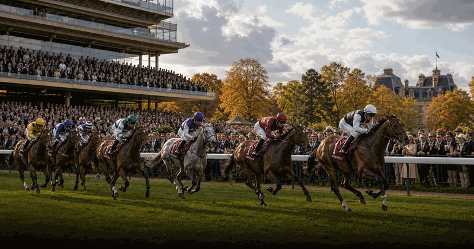
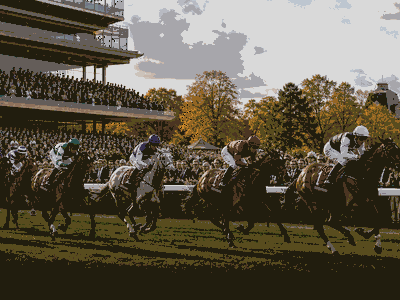

horse racing event view
Prix de l Arc de Triomphe
Prix de l Arc de Triomphe keeps the evergreen overview and current edition details together in this framed event view.
FrequencyRecurring
Current edition2027
Main cityParis
FormatHorse Racing event view
History viewEdition details in one place
Use the year switcher for recent editions. Date, venue, ticket and programme updates stay inside the same event URL.

More Horse racingInterested in more horse racing?Explore related events, places and calendar moments.